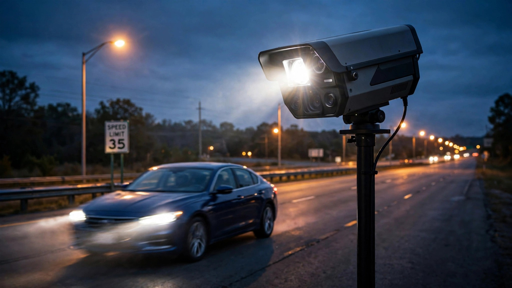

Speed Cameras Cut Crashes 30%. Nine States Made Them Illegal.

Imagine a traffic safety device that reduces collisions by 30% within seven months of deployment, works around the clock without overtime pay, never racially profiles a driver, and has been tested on 700,000 real-world crashes. You'd mandate it nationally, but Congress would rather defund any state that installs one.
A December 2025 study in the Proceedings of the National Academy of Sciences did something unusual for traffic safety research: it produced a causal estimate, not just a correlation.[1] Researchers from the University of Chicago, Columbia, and Rutgers exploited the staggered rollout of 2,000 speed cameras across New York City between 2014 and 2023 in a difference-in-differences design, the gold standard for quasi-experimental evidence, combining data on 700,000 collisions and 18 million speeding tickets. Their finding was unambiguous: cameras reduced collisions by 5% per month and injuries by 2.5% per month, cumulating to a 30% crash reduction and 16% injury reduction over seven months, with effects that were persistent, sustained, and showed no evidence of fading.
Corroborating evidence piled up from every direction: an IIHS study of Maryland's Montgomery County found speed cameras cut 10-mph-plus speeding by 59% and reduced fatal or incapacitating-injury crashes by 19%.[2] San Francisco deployed 15 cameras and measured a 72% speeding reduction in six months. Philadelphia's program slashed speeding 95% on a major corridor since 2020. Portland, Oregon, documented a 43% crash reduction and a 94% decrease in extreme speeding at camera sites.[3]
None of this is contested by anyone who has read the studies.
NHTSA says speeding is a contributing factor in approximately 29% of all traffic fatalities.[4] In 2024, that translates to roughly 11,384 speeding-related deaths out of 39,254 total. The IIHS Maryland estimate, which is more conservative than the PNAS figure, suggests camera deployment across high-risk corridors could prevent 19% of the worst outcomes in those speeding crashes. Applied nationally, that represents more than 2,100 lives per year. The PNAS number puts the ceiling closer to 3,400.
So where are the cameras? Sixteen states plus the District of Columbia permit them. Roughly 311 communities operate programs.[5] That leaves the majority of America's 4.2 million miles of public roads unmonitored by any automated speed deterrent. Meanwhile, the country has deployed approximately 3,500 speed cameras total, compared to the United Kingdom's 7,000-plus in a nation with one-fifth the road mileage.
Maine, Mississippi, New Hampshire, South Carolina, Texas, and West Virginia prohibit both red-light and speed cameras. Montana and South Dakota ban red-light cameras. New Jersey and Wisconsin ban speed cameras specifically. Missouri's Supreme Court declared the entire concept unconstitutional in 2015.[6] And the bans are expanding: Virginia introduced SB 297 in January 2026 to repeal speed camera authority entirely, Arizona is pushing a statewide ballot measure to eliminate photo radar, and Georgia's HB 225 would strip cameras from school zones by 2028.[7]
In September 2025, Congressman Pat Harrigan of North Carolina introduced the Freedom from Automated Speed Enforcement Act, which would cut 10% of federal highway funding from any state permitting speed cameras. "Automated speed cameras aren't about safety, they're about revenue," Harrigan said in a press release. "They don't stop reckless drivers, they don't engage with the community, and they don't make our roads safer."[8]
A peer-reviewed study of 700,000 crashes says otherwise.
The revenue objection deserves its full weight, because some municipalities have operated camera programs primarily as profit centers, setting speed thresholds absurdly low or hiding cameras to maximize ticket volume rather than slow drivers down. Those programs exist, and they undermine public trust. But the PNAS researchers specifically addressed this: NYC's cameras are limited to school zones with required signage, and the measured effect is on crash reduction, not revenue generation. The solution to bad implementation is better regulation, not prohibition. We don't ban seatbelts because some manufacturers install them poorly.
The due process concern is more substantive, since camera tickets typically cite the registered vehicle owner, not the person behind the wheel. Missouri's 2015 ruling rested on this distinction, and it matters in a system built on individual culpability. Oregon requires the state to prove who was driving. Other jurisdictions treat camera fines as civil penalties rather than criminal citations, with no license points attached. There are legitimate ways to structure these programs that satisfy constitutional scrutiny, and 24 states have done exactly that.[6]
The equity question cuts both ways. Fixed fines hit low-income drivers harder, a real concern that cities like New York and Seattle have addressed with adjustable fine structures and diversion programs for first-time offenders.[3] But traditional police enforcement carries its own equity burden, one measured in racial disparities during traffic stops, escalations during routine encounters, and the disproportionate deployment of patrol resources in minority neighborhoods. Automated enforcement eliminates all of those mechanisms entirely. A camera cannot see race, cannot escalate a stop into a use-of-force incident, and cannot decide to let one driver go while ticketing another for the same speed.
The PNAS study cannot tell us what would happen on rural interstates or in cities with different road geometries. NYC school zones are a specific environment, and the 30% crash reduction figure applies to that context. But the convergence of evidence across multiple cities, study designs, and road types consistently points in the same direction, and the direction is not ambiguous.
Speeding killed an estimated 10,626 Americans in 2025.[4] The most rigorously studied intervention for reducing that number is being banned by the same state legislatures that annually approve billions in highway construction funding, spending that demonstrably generates more vehicle miles traveled and, by extension, more crashes. We build roads that encourage speed and then ban the only automated tool proven to reduce it.
If you drive in a state that prohibits speed cameras, check whether your representatives are among those pushing for bans. Ask what they propose instead. Then look up your state's speeding fatality count at NHTSA's FARS query tool and do the arithmetic yourself.
Sources & References
- Stagoff-Belfort, A., Ben-Menachem, J., & Beck, B. (2025). “Can speed cameras make streets safer? Quasi-experimental evidence from New York City.” PNAS, 122(50), e2520328122. pnas.org
- IIHS, “Speed cameras reduce injury crashes in Maryland county.” iihs.org
- Portland State University / TREC, “PSU Research Delivers Blueprint for Safer Oregon Roads with Speed Safety Cameras.” trec.pdx.edu; Smart Cities Dive, “Automated traffic safety cameras: life-saving or revenue-raising?” smartcitiesdive.com
- NHTSA, Traffic Crash Deaths: 2024 Safety Areas Early Estimates; NHTSA, Traffic Fatalities Continued Downward Trend in 2025. nhtsa.gov
- NCSL, “Automated Enforcement Overview.” ncsl.org; GovTech, “Where Do Speed Cameras Work?” govtech.com
- NCSL, “Enforcing Traffic Laws with Red-Light and Speed Cameras.” ncsl.org
- Fast Company, “Is your state banning speed cameras in school zones?” fastcompany.com
- Office of Congressman Pat Harrigan (NC-10), “Freedom from Automated Speed Enforcement Act.” harrigan.house.gov